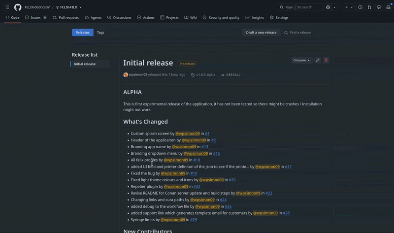
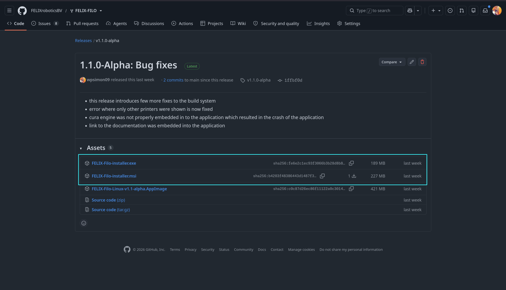
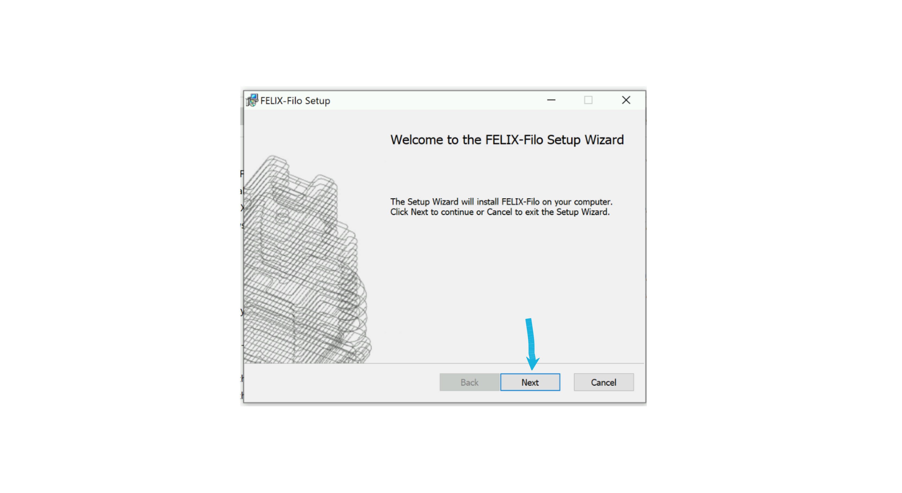
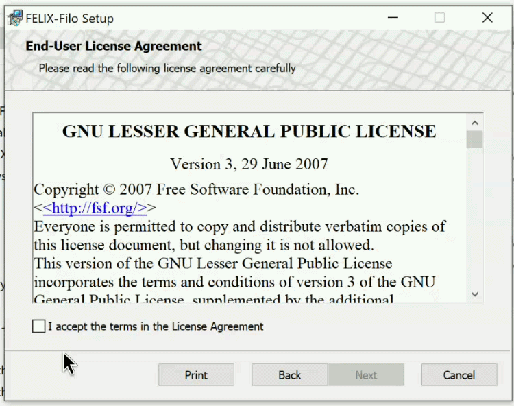
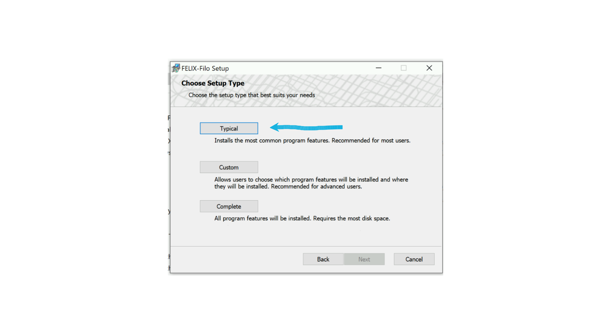
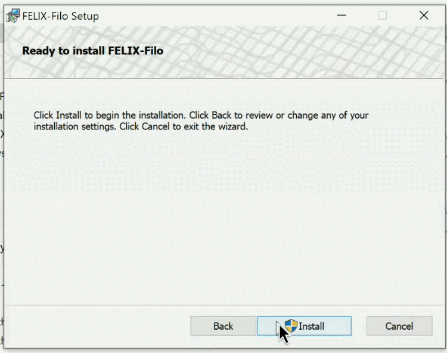
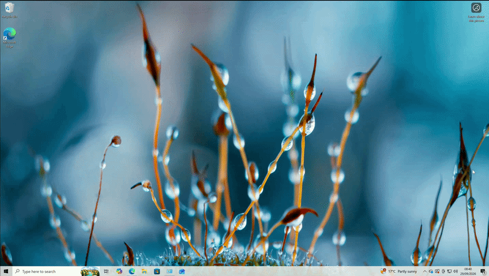

Installatie
Windows
Bezoek onze releasepagina en selecteer de release die u wilt installeren.
Navigeer naar de onderkant van de releasepagina en klap het uitklapmenu Assets open.
Selecteer hier FELIX-Filo-installer.exe of .msi. Wij raden de .msi-installer aan.

Selecteer hier FELIX-Filo-installer.exe of .msi. Wij raden de .msi-installer aan.

Zodra u het gewenste installatiebestand heeft geselecteerd, begint het downloaden.
Let op
Windows kan u waarschuwen dat dit programma onveilig is. Controleer in dat geval of u het bestand daadwerkelijk van onze github-repository download. Als dit het geval is, kunt u Windows laten weten dat u deze uitgever vertrouwt. Is dit niet het geval, neem dan contact op met onze support support@felixprinters.com
Verdergaan met de installer
Dubbelklik op de installer die u zojuist heeft gedownload en volg de instructies.
De installatiewizard verwelkomt u. Klik op Next om verder te gaan.

Als volgende stap moet u akkoord gaan met onze algemene voorwaarden en de GNU-licentie.
U kunt de licentie direct in de installer lezen. Als u akkoord gaat, vink dan het kleine vakje links op het scherm aan, met het label "I accept the terms in the license agreement".

Zodra de licentie is geaccepteerd, kunnen we verdergaan.
Installatieconfiguratie
Vervolgens vraagt de installer welke functies u wilt installeren. Wij raden aan om te kiezen voor de optie Typical.
Als u echter wilt dat de applicatie .gltf-bestanden kan interpreteren of URL-protocollen kan bieden, selecteer dan Custom.
Als u alles wilt installeren wat de applicatie te bieden heeft, selecteer dan simpelweg Complete.

Afronden
Klik vervolgens op Install om verder te gaan met de installatie.
Dit toont een voortgangsbalk die aangeeft hoeveel van de applicatie is geïnstalleerd.
Belangrijk
Windows zal u vragen of u de uitgever van de applicatie vertrouwt. U dient Yes te selecteren, zoals te zien is op de gif hieronder.

Nu moet u wachten tot de applicatie klaar is met installeren.
Als laatste stap klikt u op Finish bij de installatie.
De applicatie vinden
Navigeer simpelweg naar de Windows-zoekbalk en typ FELIX. De applicatie zou moeten verschijnen in de zoekresultaten. Klik erop om deze te starten.

Voel u vrij om hiervan een snelkoppeling op het bureaublad te maken.
Bezoek nu Aan de slag om te zien hoe u door het welkomstvenster navigeert.
Linux
Het .AppImage-bestand downloaden
Ga naar onze releasepagina en selecteer de release die u wilt installeren.
Navigeer naar de onderkant van de releasepagina en klap het uitklapmenu Assets open.
Door op FELIX-Filo.AppImage te klikken, start de download van het .AppImage-installatieprogramma.
Het installatieprogramma uitvoeren
Note
De volgende stappen worden uitgevoerd in de terminal; voor Linux is dit de eenvoudigste manier om de applicatie te installeren.
Open een terminal naar keuze en navigeer naar de locatie waar het .AppImage-bestand is gedownload.
cd ~/Downloads
Maak het installatiebestand uitvoerbaar
chmod +x FELIX-Filo.AppImage
Voer het installatieprogramma uit
./FELIX-Filo.AppImage
Hierdoor wordt de applicatie geïnstalleerd en wordt er ook een snelkoppeling op het bureaublad aangemaakt. Daarna kunt u de applicatie vrij gebruiken.
Bezoek nu Aan de slag om te zien hoe u door het welkomstvenster navigeert.
FAQ
Welke installer moet ik kiezen op Windows — .exe of .msi?
We raden de .msi-installer aan. Beide werken, maar .msi is ons voorkeursformaat voor Windows-installaties.
Windows geeft aan dat dit programma onveilig is of van een onbekende uitgever komt. Wat moet ik doen?
Controleer eerst of je de installer hebt gedownload vanaf onze officiële GitHub-repository. Als je bevestigt dat de bron correct is, kun je Windows vertellen dat je de uitgever vertrouwt en doorgaan. Als je het bestand niet van onze GitHub-repository hebt gedownload, ga dan niet verder — neem contact op met support via support@felixprinters.com.
Welk installatietype moet ik kiezen — Typical, Custom of Complete?
Typical wordt aangeraden voor de meeste gebruikers. Kies Custom als de applicatie .gltf-bestanden moet kunnen interpreteren of URL-protocollen moet ondersteunen. Kies Complete als je alle functies die de applicatie biedt wilt installeren.
Tijdens de installatie vraagt Windows of ik de uitgever vertrouw. Moet ik dit toestaan?
Ja — selecteer Yes wanneer dit wordt gevraagd. Deze toestemming is nodig zodat de applicatie zichzelf correct kan installeren.
Ik heb de installatie afgerond, maar waar vind ik de applicatie daarna?
Open de Windows-zoekbalk en typ FELIX. De applicatie verschijnt in de zoekresultaten — klik erop om te starten. Je kunt daarna ook eenvoudig een snelkoppeling op je bureaublad maken voor gemakkelijkere toegang.
Op Linux wil de AppImage niet starten wanneer ik het probeer te openen. Wat mis ik?
Zorg ervoor dat je het bestand eerst uitvoerbaar hebt gemaakt met chmod +x FELIX-Filo.AppImage in de terminal, vanuit de map waarin het is gedownload, en start het daarna met ./FELIX-Filo.AppImage.
Maakt de Linux AppImage automatisch een snelkoppeling op het bureaublad?
Ja — door de AppImage uit te voeren wordt de applicatie geïnstalleerd en wordt er automatisch een snelkoppeling op het bureaublad aangemaakt, zodat je de terminalstappen niet opnieuw hoeft te doorlopen.